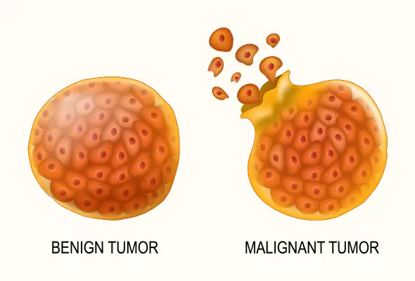
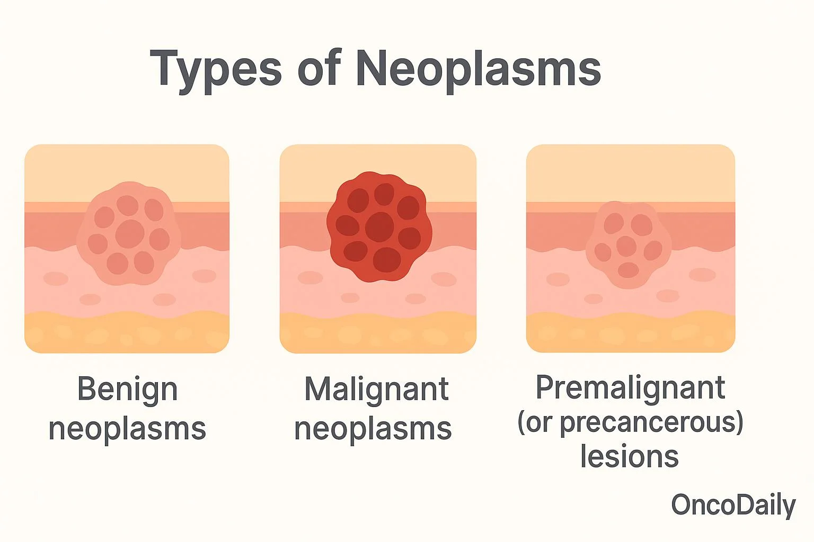
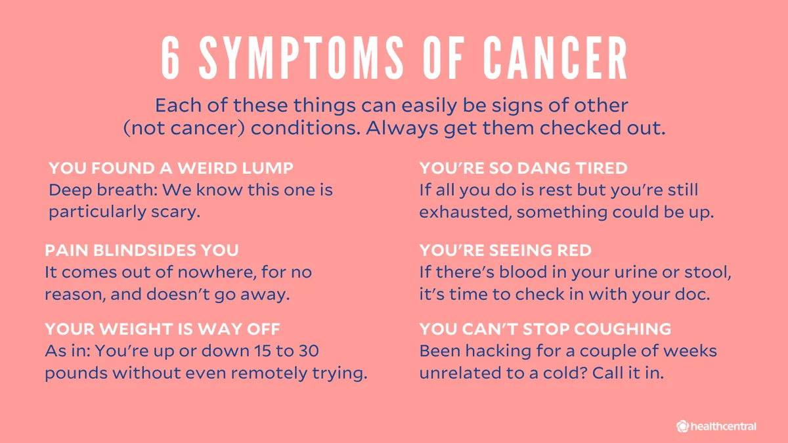
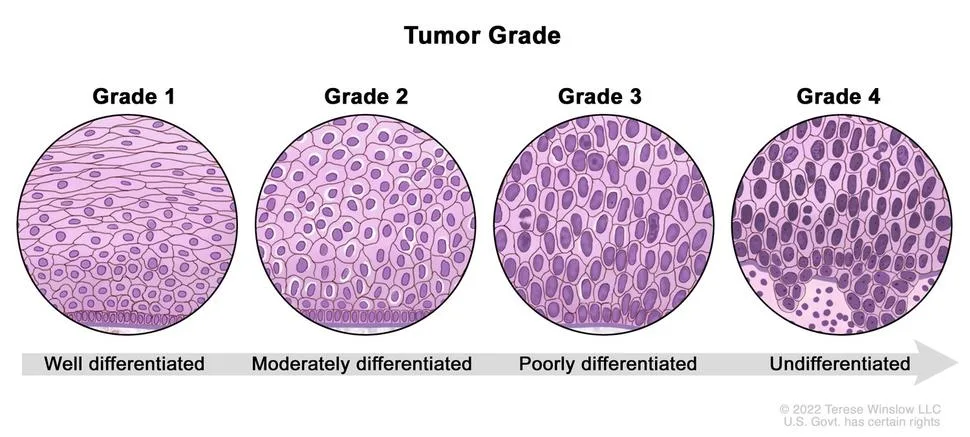

Expanded Nursing Uganda Explanation
Tumors should be understood beyond a short definition. Link the concept to patient history, focused assessment, common risks, nursing priorities, documentation and evaluation of outcomes.
Contents, 18 sections (tap to expand)
01 TUMORS (NEOPLASMS)
A Neoplasm is an abnormal mass of tissue whose growth exceeds and is uncoordinated with that of the normal tissues, and which persists in the same excessive manner after the cessation of the stimuli that evoked the change. These new abnormal growths are also commonly referred to as Tumors .
02 Etiology of Tumors
The exact cause of tumor development (oncogenesis) is often multifactorial and idiopathic . However, several factors are known to increase the risk of abnormal tissue growth:
- Genetics: Predisposition due to inherited gene alterations. For example, mutations in the BRCA1 and BRCA2 genes are linked to an increased risk of breast and ovarian cancer.
- Hereditary Factors: Certain families have a higher incidence of specific cancers, suggesting predisposing genetic factors.
- Carcinogens: These are agents that can cause cancer by damaging cellular DNA. Chemical Carcinogens: Tobacco smoke, asbestos, alcohol, aflatoxin (from fungus), and industrial chemicals like benzene.
- Physical/Radiation Carcinogens: Exposure to ultraviolet (UV) rays from the sun, and ionizing radiation from X-rays and radioactive materials.
- Viral and Microbial Infections: Certain viruses can integrate their genetic material into host cells, leading to malignant transformation. Examples include Human Papillomavirus (HPV) predisposing to cervical cancer, Hepatitis B and C viruses to liver cancer, and Epstein-Barr virus (EBV) to certain lymphomas.
- Immunosuppression: A weakened immune system is less effective at detecting and destroying abnormal cells. This is seen in individuals with HIV/AIDS (predisposing to Kaposi's sarcoma) or those on immunosuppressive drugs after organ transplants.
- Hormonal Disturbances: Imbalances in certain hormones, especially growth-related hormones or sex hormones (e.g., estrogen), can promote the growth of hormone-sensitive tumors.
- Lifestyle Factors: Substance Use: Excessive alcohol consumption and cigarette smoking are major risk factors for many cancers.
- Diet: A diet high in processed meats and low in fruits and vegetables is linked to an increased risk of certain cancers, like colorectal cancer.
- Obesity and Physical Inactivity: These contribute to a pro-inflammatory state and hormonal imbalances that can drive tumor growth.
- Chronic Irritation and Inflammation: Prolonged inflammation can lead to increased cell turnover and a higher chance of DNA mutations (e.g., chronic acid reflux leading to esophageal cancer). Local trauma or injury is less commonly a direct cause but can be associated with inflammation.
- Demographic Factors: Age: The incidence of cancer increases significantly with age, as cellular repair mechanisms become less efficient over time.
- Race and Geographical Distribution: Certain tumors are more common in specific racial groups or geographical locations, likely due to a combination of genetic, environmental, and lifestyle factors.
03 Classification of Tumors
Tumors are broadly classified based on their clinical behavior, cellular origin, and potential to spread.
These are non-cancerous growths. They tend to grow slowly and are often enclosed in a fibrous capsule, which keeps them from spreading to surrounding tissues. While they do not metastasize (spread to distant sites), they can cause problems by exerting pressure on vital organs, nerves, or blood vessels. Histologically, the cells of a benign tumor are well-differentiated, meaning they closely resemble the normal cells of the tissue from which they originated. They generally do not return after surgical removal. However, some benign tumors have the potential to become malignant if left untreated.
These are cancerous tumors. They are characterized by rapid, uncontrolled growth and the ability to invade and destroy surrounding tissues. Malignant cells are anaplastic, meaning they are poorly differentiated and do not resemble normal cells in shape, size, or function. A key feature is their ability to metastasize, where cells break away from the primary tumor and travel through the blood or lymphatic system to form secondary tumors (metastases) in other parts of the body. Malignant tumors have a high tendency to recur after removal.
This refers to conditions involving abnormal cells that are not yet cancerous but have an increased risk of developing into a malignant tumor over time. These conditions require close monitoring and sometimes treatment.
04 Types of Benign Tumors
Benign tumors are typically named by adding the suffix “-oma” to the name of the tissue of origin.
Benign tumors arising from the epithelial tissue of a gland or gland-like structure. Common examples include colon polyps and adenomas of the thyroid, pituitary, or liver. They can sometimes become cancerous and may require surgical removal.
Tumors of fibrous or connective tissue that can grow in any organ. They are very common in the uterus (leiomyomas, often called fibroids) and can cause symptoms like heavy bleeding or pelvic pain, necessitating removal.
A benign tumor formed by a collection of excess blood vessels. They often appear on the skin as "strawberry marks," especially in newborns, and most fade over time without treatment.
The most common benign tumor in adults, arising from fat cells (adipose tissue). They are slow-growing, soft, movable lumps often found on the neck, shoulders, or back. Treatment is usually only necessary if they become painful or grow rapidly.
Tumors that develop from the meninges, the membranes surrounding the brain and spinal cord. Most are benign and slow-growing. Symptoms (headaches, seizures, weakness) depend on their location and may require treatment.
Tumors that grow from muscle tissue. Leiomyomas grow from smooth muscle (e.g., in the uterus, stomach). Rhabdomyomas are rare benign tumors of skeletal muscle.
Benign tumors that grow from nerves. Neurofibromas and schwannomas are other examples, which can occur anywhere in the body.
Benign tumors of bone. The most common type is an osteochondroma, which usually appears as a painless bump near a joint, like the knee or shoulder.
Growths that project in finger-like fronds from epithelial tissue. They can appear on the skin, cervix, or in breast ducts. Some are caused by HPV and may require removal to rule out cancer.
Very common noncancerous growths on the skin.
05 Types of Premalignant Conditions
Also known as solar keratosis, these are crusty, scaly patches of skin caused by sun exposure, especially in fair-skinned individuals. A percentage of these can progress to squamous cell carcinoma.
Abnormal cell changes on the surface of the cervix, usually detected by a Pap smear. It is considered premalignant and is at risk of developing into cervical cancer if not treated.
A change in the cells lining the bronchi (airways), often caused by smoking, where glandular cells are replaced by squamous cells. This can be a precursor to cancer.
Thick, white patches that form on the gums, inside the cheeks, or on the tongue, which cannot be scraped off. It is strongly linked to tobacco use and a small percentage can become cancerous.
06 Types of Malignant Tumors
Malignant tumors are named based on their tissue of origin.
The most common type of cancer, forming from epithelial cells that line the surfaces of the body. Examples include adenocarcinoma (from glandular cells), squamous cell carcinoma, and basal cell carcinoma. They can occur in the lung, breast, prostate, colon, and skin.
Cancers that arise from connective and supportive tissues such as bone, cartilage, fat, muscle, and nerves. Examples include osteosarcoma (bone) and liposarcoma (fat).
Tumors derived from embryonic (precursor) cells. They are more common in children. Examples include neuroblastoma (nerve cells), retinoblastoma (eye), and medulloblastoma (brain).
These arise from reproductive cells (sperm or eggs) and most often occur in the testicles or ovaries. Teratomas are a common type.
These are cancers of the blood-forming cells and immune system. Leukemia is a cancer of the bone marrow that leads to an overproduction of abnormal white blood cells. Lymphomas (e.g., Hodgkin's and non-Hodgkin's) are cancers of the lymphatic system. Note: All lymphomas are malignant.
07 Modes of Spread (Metastasis)
Malignant tumors spread via several pathways:
- Local Extension: Direct invasion into adjacent tissues.
- Lymphatic Spread: Tumor cells enter lymphatic vessels and travel to regional lymph nodes.
- Hematogenous (Blood) Spread: Tumor cells penetrate blood vessels and are carried to distant organs like the liver, lungs, and brain.
- Transcoelomic Spread: Malignant cells spread across body cavities like the peritoneum or pleura.
- Tumor Seedlings: Accidental transplantation of tumor cells to new sites, for instance, during a surgical procedure.
08 Diagnosis and Investigations
Diagnosis involves a combination of history, physical examination, and investigations.
- Biopsy: The definitive diagnosis of cancer is made by examining a tissue sample under a microscope. Excisional Biopsy: Removal of the entire tumor or suspicious area.
- Incisional or Core Biopsy: Removal of a sample directly from the tumor.
- Needle Aspiration Biopsy: Removal of fluid or a small tissue sample with a needle.
- Imaging Studies: To determine the tumor's location, size, and extent of spread. These include CT scans, MRI scans, X-rays, Ultrasounds, and Mammograms.
- Endoscopy: To visualize internal organs and obtain biopsies (e.g., colonoscopy for colon polyps, endoscopy for stomach tumors).
- Blood Tests: Can include complete blood counts and checks for tumor markers (substances produced by cancer cells).
- Cytological Examinations: Such as a Pap smear to examine cells from the cervix for abnormalities.
09 Tumor Staging and Grading
Once cancer is diagnosed, it is staged and graded to plan treatment and predict prognosis.
- Grading: Describes how abnormal the cancer cells look under a microscope (degree of differentiation). A lower grade (e.g., Grade 1) means the cells are well-differentiated and look more like normal cells, suggesting a slower-growing cancer. A higher grade (e.g., Grade 3 or 4) means the cells are poorly differentiated or anaplastic, suggesting a more aggressive cancer.
- Staging: Describes the size of the tumor and how far it has spread from its original location. The most common system is the TNM system : T (Tumor): Describes the size and extent of the primary tumor.
- N (Nodes): Indicates whether the cancer has spread to nearby lymph nodes.
- M (Metastasis): Indicates whether the cancer has metastasized to distant parts of the body.
10 Management of Malignant Tumors
Treatment can be curative (aiming to cure the disease) or palliative (aiming to relieve symptoms and improve quality of life when a cure is not possible).
11 Curative Treatment
Often involves a combination of modalities:
- Surgery: The physical removal of the tumor, often with a margin of surrounding healthy tissue. It is a primary treatment for many solid tumors.
- Radiotherapy: Uses high-energy radiation to kill cancer cells and shrink tumors. It can be used alone or in combination with other treatments.
- Cytotoxic Chemotherapy: The use of drugs to kill rapidly dividing cancer cells. It is particularly effective for metastatic disease or blood cancers.
12 Palliative Management
Focuses on symptom control and maintaining quality of life.
- Surgery: Can be used to relieve symptoms, such as debulking a tumor that is causing an obstruction or pain, even if it cannot be completely removed.
- Radiotherapy: Effective for shrinking tumors to relieve pain, especially from bone metastases.
- Hormone Therapy: Blocks or lowers the amount of hormones that some cancers (like breast and prostate) need to grow.
- Targeted Therapy and Immunotherapy: Newer treatments that target specific molecular characteristics of cancer cells or boost the body's own immune system to fight cancer.
- Cytotoxic Chemotherapy: Can be used in lower doses to control tumor growth and manage symptoms. Drugs used include: Alkylating agents (e.g., cyclophosphamide)
- Antimetabolites (e.g., methotrexate, fluorouracil)
- Plant alkaloids (e.g., vincristine)
- Cytotoxic antibiotics (e.g., doxorubicin)
- Platinum compounds (e.g., cisplatin)
- Monoclonal antibodies (e.g., trastuzumab)
- Symptom Control: Pain Relief: Use of analgesics (from non-opioids to strong opiates), as well as nerve blocks with phenol or alcohol.
- Supportive Drugs: Anti-emetics for nausea, tranquilizers, and hypnotics.
- Maintenance of Morale: Providing psychological, emotional, and spiritual support is a crucial part of holistic care.
13 Prevention of Tumors and Cancers
Many cancers can be prevented through healthy lifestyle choices and regular screening.
- Early Screening and Detection: Regular check-ups, self-examinations (e.g., self-breast exam), and recommended screenings (e.g., Pap smears, colonoscopies, mammograms).
- Reduce Carcinogen Exposure: Minimize exposure to radiation, toxic chemicals, and excessive sun (use sunscreen).
- Healthy Lifestyle: Maintain a healthy weight and exercise regularly.
- Eat a balanced diet rich in fruits, vegetables, and fiber.
- Limit alcohol consumption.
- Avoid smoking and chewing tobacco.
14 Table 1: Difference between Benign and Malignant Tumors
- Characteristic Benign Tumors Malignant Tumors
- Cancerous No, they are non-cancerous. Yes, they are cancerous.
- Rate of Growth Slow Rapid
- Capsule Typically encapsulated (enclosed in a capsule). Not encapsulated; invasive.
- Invasion Does not invade surrounding tissues; grows by expansion. Invades and destroys surrounding tissues.
- Metastasis Does not metastasize. Frequently metastasizes to distant sites.
- Cell Differentiation Well-differentiated; cells resemble normal tissue. Poorly differentiated (anaplastic); abnormal cell structure.
- Recurrence Rarely recurs after surgical removal. Frequently recurs after removal.
- Systemic Effects Usually localized effects (e.g., pressure on organs). Can cause systemic effects like weight loss, fatigue (cachexia).
15 Nursing Uganda Clinical Lens
Use Tumors as a practical nursing topic, not only a memorized definition. Prioritize airway, breathing, circulation, pain, asepsis, wound healing and early complication detection.
- What to understand first: define tumors, identify the normal or expected pattern, then explain what changes when the patient is unwell.
- Why it matters in care: the nurse must recognize risk early, explain findings clearly, document accurately and know when to escalate.
- How to revise it: connect each point to assessment, nursing diagnosis or care problem, intervention, rationale and evaluation.
16 Assessment Guide
- Vital signs, pain, bleeding, perfusion, level of consciousness and injury pattern.
- Wound appearance, drainage, odour, swelling, temperature and surrounding skin.
- Fluid balance, mobility, nutrition, surgical site risk and ordered investigations.
17 Nursing Priorities, Rationales and Outcomes
- Stabilize urgent problems first, then prepare for investigations or theatre care.
- Maintain aseptic technique, pain control, wound care and documentation.
- Prevent shock, infection, pressure injury, deep vein thrombosis and delayed healing.
The rationale for these priorities is patient safety: nursing actions should prevent deterioration, reduce discomfort, support recovery and create clear evidence for the next caregiver.
- Expected outcome: The patient remains stable, wound healing progresses, pain is controlled and complications are recognized early.
18 Patient Teaching and Revision Check
- Explain tumors in simple language the patient or caregiver can repeat back.
- Teach warning signs, medicine or follow-up instructions, hygiene or lifestyle points where relevant.
- For exams, prepare a short answer using: definition, causes or risk factors, signs, assessment, management, complications and prevention.
- For ward practice, document baseline findings, actions taken, patient response and the plan for review.
Illustrations and Diagrams (4)




Related Video Lectures
Watch nursing lecture videos on YouTube for this topic. Opens in a new tab.
Watch on YouTubeExternal link: YouTube may use its own cookies and terms. Nursing Uganda is not affiliated with YouTube.